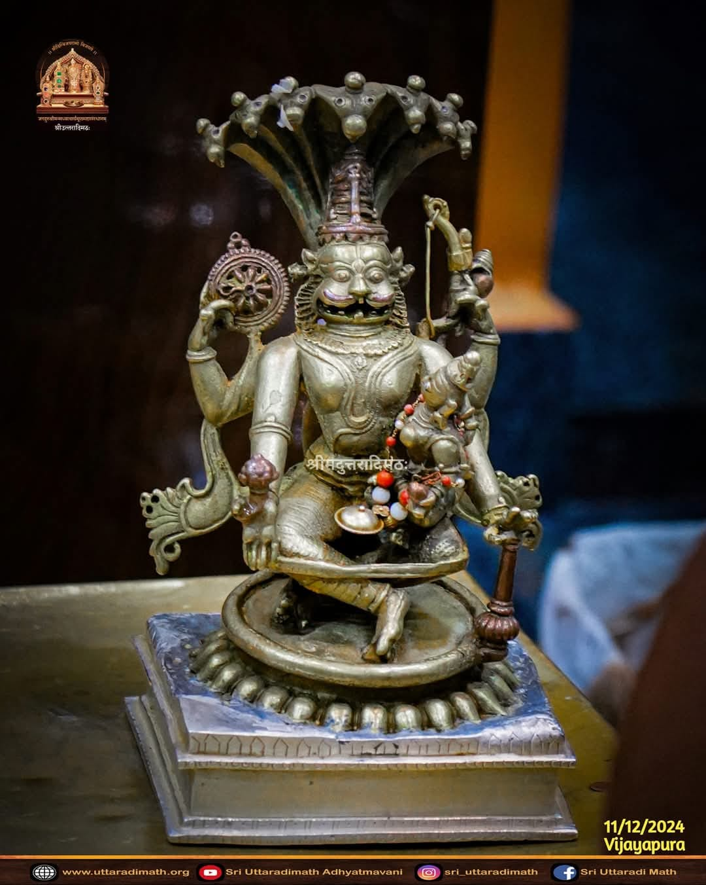
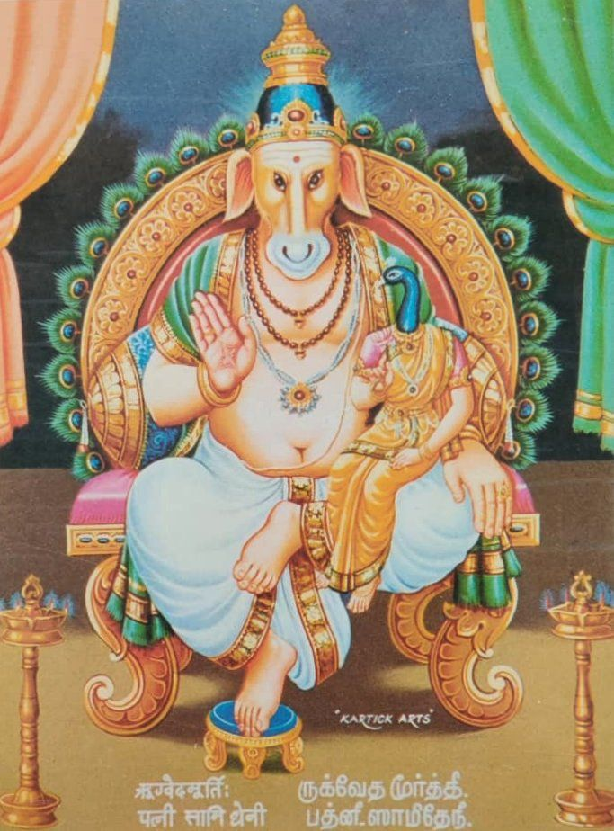
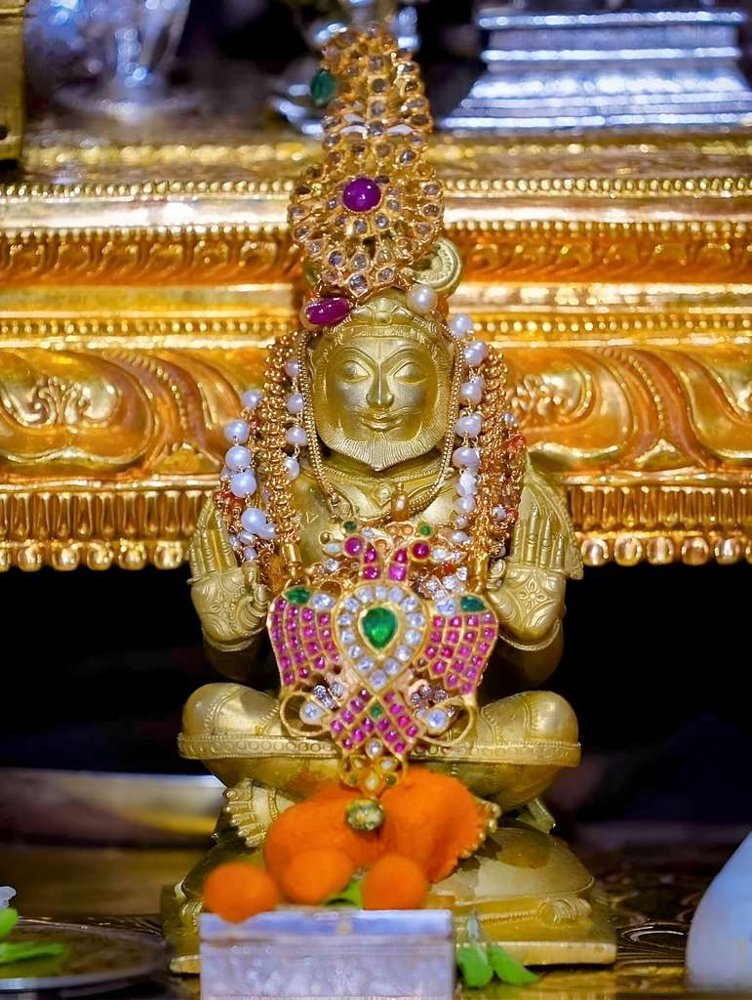
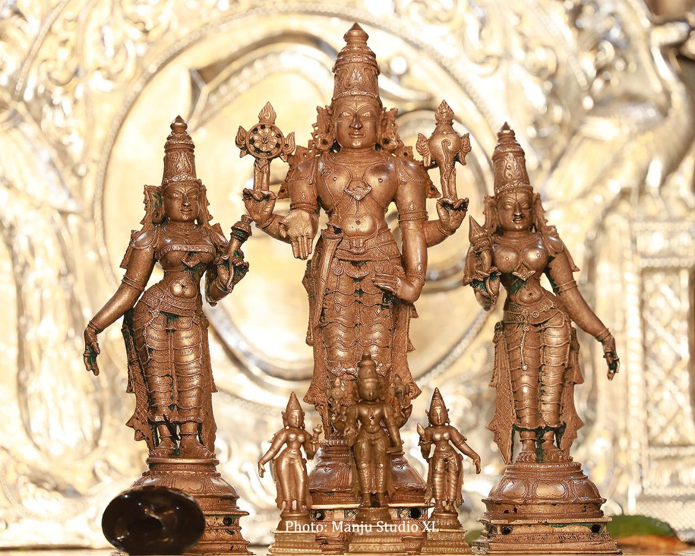
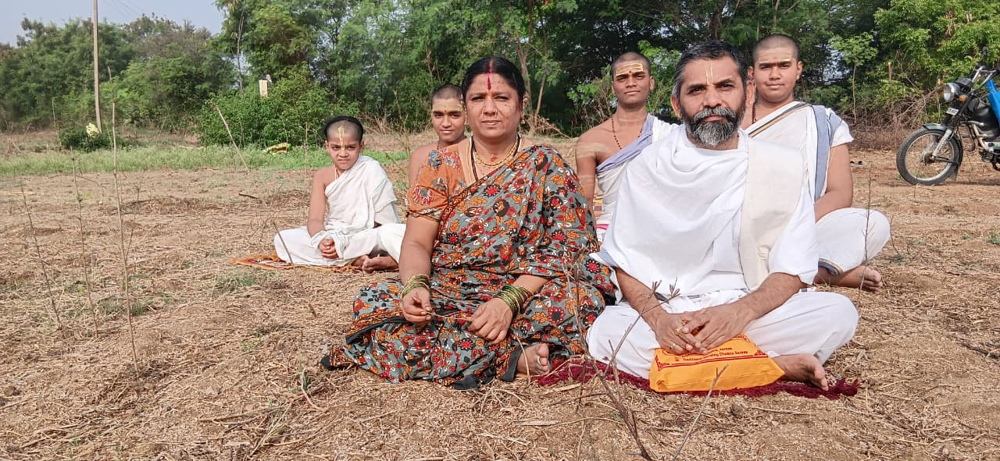

Sri Narasimha Devaru
Sri Rigveda Purusha
Sri Veda Vyasa
Sri VenkateswaraA Sacred Vedapathashala Dedicated to the Preservation and Propagation of Vedic Knowledge, Dharmic Education & Spiritual Wisdom through the Guru-Shishya Parampara
వేదోఽఖిలో ధర్మమూలమ్
"The entire Veda is the root of Dharma" — Established under the divine blessings of Sri Sri Sri 1008 Sri Satyatma Theertha Mahaswamiji (Srimad Uttaradi Math)
Established on Vijayadashami, October 21, 2007 | Nanded, Maharashtra
Ruk Samhita and Vedic learning through authentic Guru-Shishya parampara
Sanskrit grammar, Nyaya, Vyakarana, and Vedanta studies
Ramayana, Mahabharata & Bhagavata teachings in interactive Q&A format
Dharmic guidance for householders in Nitya & Naimittika karmas
17+ Years of Preserving Vedic Heritage
As the Veda commands — "Swadhyaya Pravachanabhyam Na Pramaditavyam" — one must never neglect self-study and teaching. Following this sacred directive, the Sree Vageeshwari Sri Satyanidhi Theertha Vidya Peetham was established on the auspicious occasion of Vijayadashami, October 21, 2007 in Nanded, Maharashtra.
Founded under the divine blessings of Sri Sri Sri 1008 Sri Satyatma Theertha Mahaswamiji of Srimad Uttaradi Math, the Vidya Peetham has been a beacon of Vedic education — not merely teaching the Vedas, but also guiding dharmic householders, inspiring devotion in Nitya and Naimittika karmas, and supporting underprivileged students in their education.
15 years in Nanded and 2 years in Nizamabad (within the Uttaradi Math premises) — the Peetham has served the cause of Vedic propagation with unwavering dedication.

Founder with family & students at the proposed Vedapathashala land